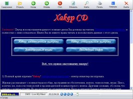

Здесь Вы сможете увидеть и скачать все мои бесплатные и некоммерческие программы. В основном они писались для себя либо для практики в программировании. Однако некоторые программы вполне могут вызвать у Вас интерес.
 | Vertex Engine - небольшое OpenGL приложение, предназначенное для визуализации объектов механики материалов. Приложение не окончено и представляет интерес лишь как симбиоз OpenGL, SDL, guichan и других библиотек на живом примере. Приложение полностью кроссплатформенное. Архив содержит исходные коды, исполняемые файлы под Windows и Linux, презентацию на русском языке. Использованные библиотеки: OpenGL, SDL, guichan, libxml2, libpng. |
 | dx Memory Manager - эмулятор планировщика оперативной памяти ОС. Имеет только англоязычный интерфейс. Реализованы алгоритмы: - First fit - Worst fit - Best fit |
 | dxPlanner это программное обеспечение, которое имитирует процессы функционирования системы планирования ОС. Первоначально она была создана в качестве лабораторной работы в Гомельском государственном техническом университете имени Павела Сухого. Реализованы следующие алгоритмы: - First Come First Serve - Priority Round Robbin - Non priority Round Robbin - Shortest Job First Также реализовано разделение критических секций, аналогичное работе семафоров. Имеется только английский интерфейс пользователя. |
 | Приложенье из разряда "прияные мелочи, облегчающие нашу жизнь". Довольно часто панель задач забита "ненужными" приложениями. Т.е., они конечно, нужны, но должны висеть в фоне, а не на панели задач и должны просто не мешать пользователю. Эта программа позволяет вам скрыть/показать любое приложение. Программа также не требует инсталляции |
 | Тест система с исходниками. Вопросы с ответами хранятся в INI-файле. Просле прохождения теста программа говорит количество правильных и неправильных ответов, а также процентное соотношение. |
|  | Иногда нужно сделать авторан, использующий HTML странички, но не использующий веб-браузер по умолчанию (т.к. нужен уникальный, красивый дизайн, или мощное звуковое сопровождение). Если нет времени на написание своей программы, или Вам неохота подбирать красивый и удобный дизайн - то эта программа для Вас. Программа имеет дружественный интерфейс и встроенный медиаплеер, по возможностям близкий к Winamp'у. Возможные настройки: изменение иконки и имени приложения на панели задач, изменение начальной страницы, полностью настраиваемый язык интерфейса, изменение порядка кнопок на главной панели, произношение голосом основных команд (работает на Windows NT, 2k, XP, Win9x с SAPI SDK ) , настройка медиаплеера (просто гляньте в файл default.dtp). Также есть возможность искать фразы по текущей странице и использовать буфер обмена. |
 | Обычный инженерный калькулятор. В отличие от стандартного калькулятора Windows имеет приятное оформление и более удобную систему работы с тригонометрией. |